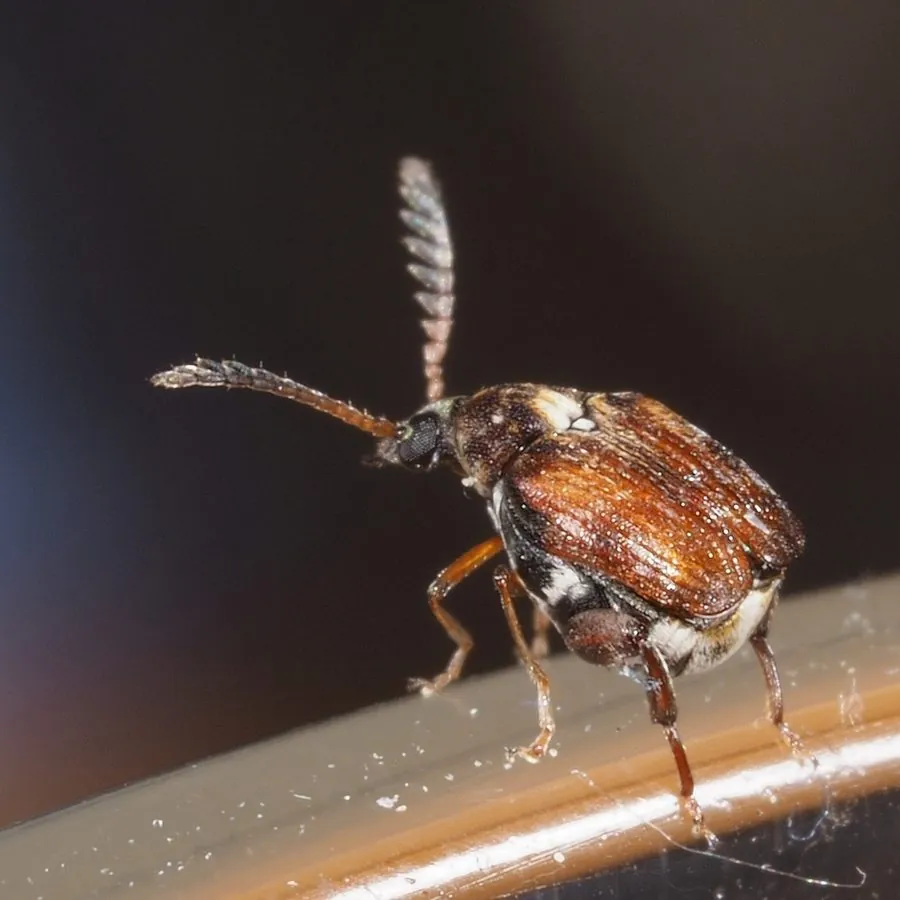

昆虫 · 动物界
绿豆象 Callosobruchus chinensis

体小而短粗的豆象，头胸黑褐、鞘翅红褐带白斑，幼虫蛀食绿豆与豇豆等储粮，是仓库和农家常见的储粮害虫。
- 分类
- 门节肢动物门纲昆虫纲目鞘翅目科豆象科属瘤背豆象属
- 栖息环境
- 绿豆、豇豆等豆类的仓库、农家贮粮容器和田间
- 地理分布
- 全球温暖地区，中国各地均有分布
- 保护级别
- 尚无保护级别；为绿豆与豇豆最重要的储粮害虫
物种志
绿豆象的体长约三毫米，体形短粗而隆起，头部与胸部黑褐色，鞘翅红褐色至黄褐色，鞘翅末端有一块灰白色的斑，体表密被细毛，形成深浅相间的斑纹。它的触角雄虫呈栉齿状、雌虫呈锯齿状，这是区分雌雄的明显特征。复眼大而突出，前胸背板呈梯形，两侧有黑色斑。
它分布于全球温暖地区，在中国各地都有，栖息在绿豆、豇豆、赤豆等豆类的仓库、农家贮粮容器和田间，成虫在豆粒表面产卵，幼虫孵化后蛀入豆粒内部取食，把豆粒蛀成空壳，并在其中化蛹，羽化时在豆粒上留下圆形的羽化孔。它一年可发生四至六代，在仓库中可终年繁殖，是绿豆和豇豆最重要的储粮害虫。它尚无保护级别，防治以晒干密封、低温贮藏和磷化铝熏蒸为主。
形态与习性
- 体长约三毫米，短粗而隆起
- 体色头胸黑褐，鞘翅红褐，末端有白斑
- 触角雄虫栉齿状，雌虫锯齿状
- 为害幼虫蛀入豆粒取食，留下圆形羽化孔
- 繁殖一年四至六代，仓库中可终年繁殖
- 防治晒干密封、低温贮藏、熏蒸
趣味知识
- 一颗绿豆里往往只住一条幼虫，它把豆肉吃光再化蛹。
- 羽化时它咬开一个圆圆的小孔钻出来，那孔就是豆子被蛀空的证据。
- 雄虫的触角像一把小梳子，雌虫的则像一把小锯。